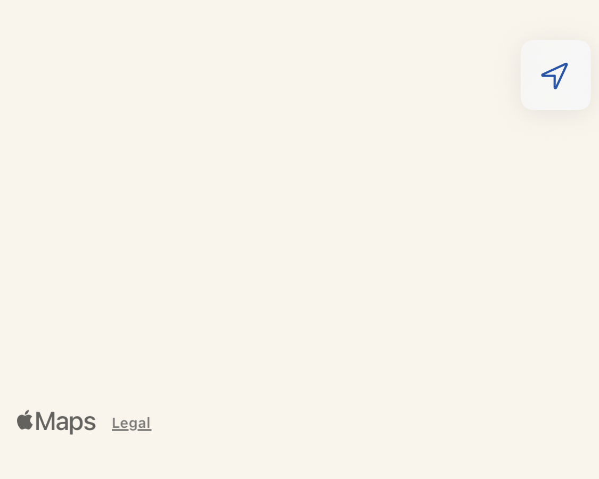

The Map tab shows all nodes that have shared a position, overlaid on an Apple Maps base layer.
Each node that has reported a GPS position appears as a coloured circle pin on the map. The green solid line shows a directly connected node; orange dashed lines show nodes reached via the mesh. A purple star marks a waypoint. Tap a pin to see the node name, last heard time, signal info, and a shortcut to send a direct message.
Pins update automatically when a new position packet is received from the mesh.
Tap the layer icon (top-right) to switch between:
| Layer | Description |
|---|---|
| Standard | Default Apple Maps street/satellite hybrid |
| Satellite | Aerial imagery |
| GeoJSON Overlays | Custom map layers loaded from .geojson files in the app's file storage |
Waypoints are named points of interest you can share across the mesh.
Tap an existing waypoint pin, then tap Edit. Changes broadcast to the mesh immediately.
Tap the waypoint, then tap Delete. The deletion broadcasts to all nodes.
When a node has reported multiple positions over time, a trail line connects the historical positions on the map, showing the node's path.

Your current GPS position appears as a blue dot (standard iOS location indicator). Enable position broadcasting in Settings → Position to share your location with the mesh.